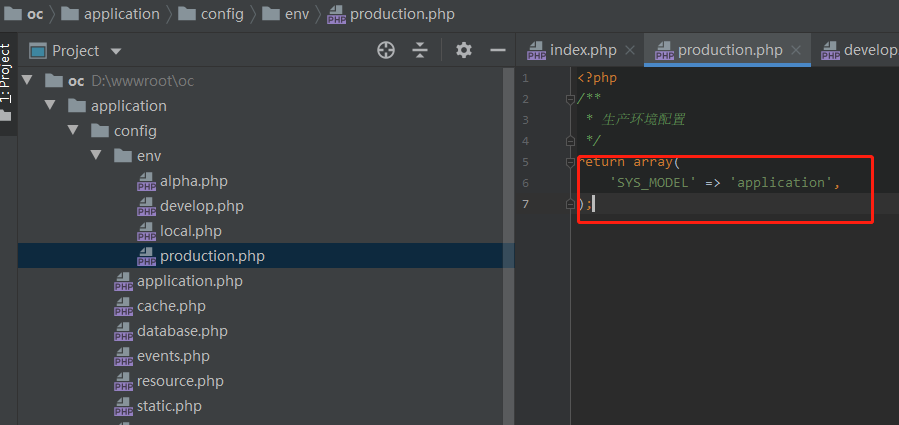
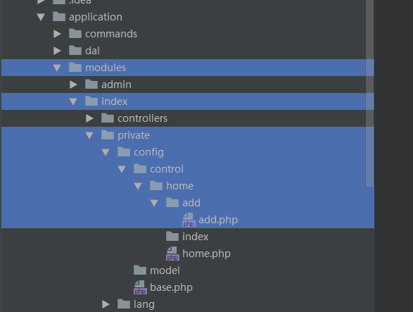

系统配置
一、配置介绍 配置分为三种： （1）控制层配置 这是整站都可以用到的配置。不过模块配置只限当前模块内部调用。 （3）模型层配置 这是数据模型Model使用到的配置，一般用于配置字段在验证规则、字段别名、连接查询等。 二、配置目录介绍 注：同一配置目录中所有文件的配置都会同时加载。 1、控制层配置 （1）全局配置（application/config） 这是全局性配置，任何时候和地方都能使用。控制器、数据模型和视图都能用。 框架默认在新建应用时都默认生成了以下配置文件，其中的配置任何控制器动作都有效，除非在control控制器配置中覆盖了，配置内容不允许删除。 （a）application.php 应用级配置。 修改这些配置不影响系统代码和功能。特别有利于开源系统开发，因为可以允许站长修改其中配置。 （b）system.php 开发级配置。 只能由开发人员修改，否则可能会影响代码运行。 （c）database.php 数据库配置。 可以复制DATABASE的default新增新的服务器配置。 数据库集群中配置太多，可以使用自定义回调，具体的请参看数据库配置的第4（2）点。 （d）cache.php 缓存的配置。一般用于Memcache和Redis等缓存的构建。 （e）static.php 静态生成规则配置。定义纯静态生成的规则，请参见静态生成一节。 （f）events.php 事件回调配置。所有的事件回调都在该文件。具体的回调介绍，在手册相应地方会有说明。 （g）多运行环境配置 本框架提供了多运行环境配置env目录，默认提供了local（本地环境）、develop（开发环境）、alpha（测试环境）和production（生产环境）四个配置文件。  对于运行环境的获取，框架提供了资源回调的方式，修改resource.php中的env的get_env配置即可。/** * 运行环境配置 */ 'env' => array( 'get_env' => 'Callbacks\GetEnvironment', //获取环境类型事件回调 ),其中support下的Callbacks\GetEnvironment类代码，如下实例：namespace Callbacks; class GetEnvironment { public function handle() { return get_cfg_var('local.env') ?: 'local'); } }然后我们可以在php.ini中添加一行：local.env=local （h）新增配置文件 除了上述基本的配置文件以外，我们还可以在该目录新增全局性的配置文件，所有的控制器动作都能使用。 （2）模块配置（application/modules/模块名/private/config） 这是仅限当前模块、控制器和动作Action使用的配置。从上到下逐层覆盖。  如上图所示，index模块home控制器的add动作配置文件add.php，会覆盖home.php配置，而home.php会覆盖上层base.php配置。 2、模型层配置 数据模型的配置都写在模型类中，包括namespace app\model\database; use Base\Model\DatabaseModel; class CallOrdersModel extends DatabaseModel { protected static $table = 'call_orders'; protected static $primary = 'id'; protected static $entity = 'app\model\entity\database\CallOrdersEntity'; /** * 初始化模型 */ public function __model() {} /** * 字段别名映射配置 */ public function fieldsMap() {} /** * 表间关联配置 */ public function relations() {} /** * 字段验证配置 */ public function rules() {} }三、配置文件的加载顺序 首先，框架加载全局配置。 然后，如果能获取到环境变量，框架会加载env中的环境配置。 再次，在运行控制器动作前，会加载当前控制层的配置。 四、如何获取配置 获取配置，要使用ocConfig()函数，请参见函数智能/系统应用函数中ocConfig函数的使用。 另外，有些配置可以设置资源提供器来获取，请参见数据库配置一节。